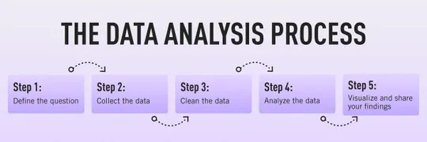
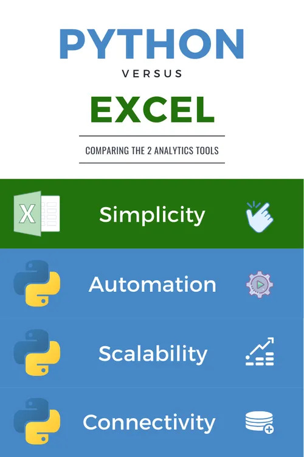
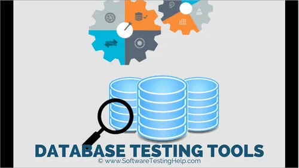

This project involves cleaning and analyzing given dataset using Excel. I performed data cleaning techniques and exploratory data analysis.

The task is to utilize lookup functions to extract, match, and analyze data across multiple
sheets in the given dataset using Excel.
A set of questions are provided in this project designed for practice and implementation
of Python data structures, loops, if statements, list comprehensions, and lambda functions.
Each question includes the beginning of the code and the expected output. The task is to
complete the missing parts of the code to achieve the expected output.

This project will help you learn how to visualize data using different Python libraries like matplotlib and Seaborn.
You will also perform data analysis based on a dataset.
The project involves building a complete, insightful Power BI Dashboard
based on an open-ended dataset.
